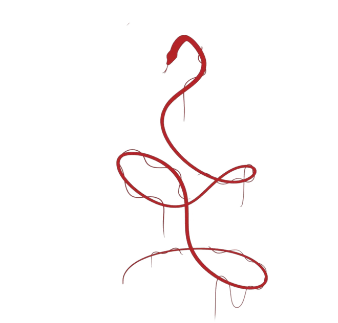
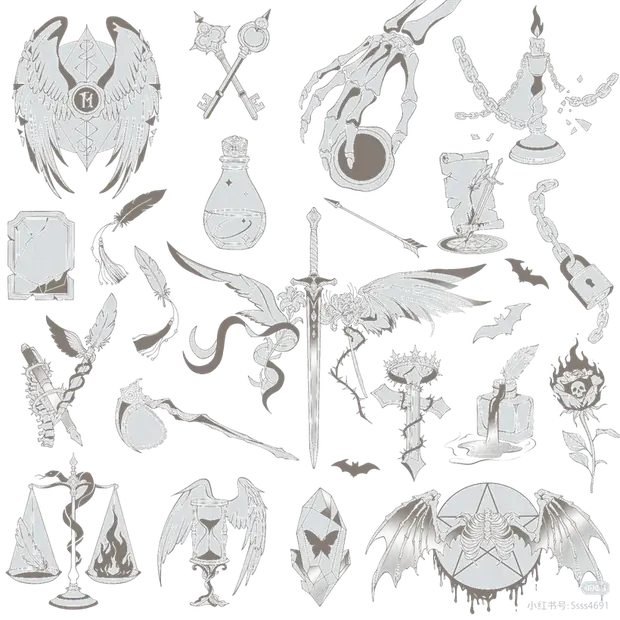
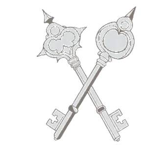

静 默 诊 所THE CLINIC OF QUIET THINGS
CASE Ⅶ-1113 · 保密 / CONFIDENTIAL

CASE FILE 静默诊所
厌
Y A N
一份关于「我」的问诊记录
「不必着急，我们可以慢慢来。」
门诊时间不固定
Ⅰ
PATIENT PROFILE / 患者资料
初 次 登 记
Intake Form- 姓名 / NAME
- 厌 YAN
- 性别 / SEX
- 女
- 属性 / NATURE
- 双
- 星座 / SIGN
- 天蝎座 SCORPIO
- 人格 / TYPE
- INFP 调停者
- 陪同人员
- 无
「不擅长被读懂，
却把答案都写在了纸上。」
—— 记录员 手记
已 受 理RECEIVED
Ⅱ
INTAKE NOTES / 问诊记录
「请 坐」
Chief Complaint医 生
请坐。今天想从哪里说起？
患 者
……我好像，把自己弄丢了一部分。
医 生
会疼吗？
患 者
不会。只是有点冷。
而且，我好像 并不太想把它找回来。
医师备注
语速平缓，目光低垂。对「冷」的描述多于「痛」。建议延长观察，暂不开药。
请 选 择
（等待作答）

※
INTERACTIVE · 喜雷全条目
请 查 阅
Please Review统计 / TALLY
喜 070
雷 080
合计0
初步意见
尚未作答。
点击任意一行 · 可让它重新写一遍
Ⅲ
DIAGNOSIS / Rx · 诊断与处方
长 期 医 嘱
Long-term Order诊 断 / DIAGNOSIS
慢性温柔性失血
CHRONIC GENTLE HEMORRHAGE
症 状 / SYMPTOMS
- 对废墟有归属感，在完整的地方反而坐不住
- 反复梦见蛇褪下的皮，叠得很整齐
- 夜里听得比白天清楚
处 方 / PRESCRIPTION
- 每晚允许自己不完整 15 分钟
- 蜡烛一支，燃尽即可，不必续上
- 若听见有人叫你的名字，先确认那是不是你自己
长期有效LONG-TERM
Ⅳ
NOCTURNAL OBSERVATION / 夜间观察
静 物 与 声 音
Still Life, 00:00—05:0023:47蜡烛还亮着，没有人记得点上它。
01:12蛇从十字架的阴影里绕过去，没有声音。
02:36她在忏悔。为还没做的事。
04:40她说：别关灯。
只是怕安静得太完整。
观察员签名：厌（笔迹很轻）

Ⅶ
FOLLOW-UP / 复诊与联络
请 慢 走
Until Next Time如果哪天想说点什么，
或者只是想让某支蜡烛多亮一会儿——
- 微信 / WeChat
- hf18451559961
- ＱＱ / QQ
- 941817461
门诊时间不固定（我睡得比较晚）
厌
厌 · 敬上
谢谢你读到这里。请慢走。